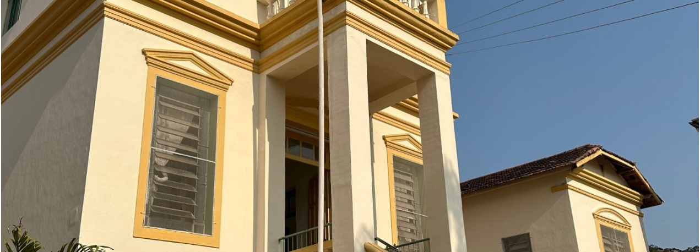

15 Jun 2026
Novos equipamentos de Raio-X entram em operação
Modernizamos nosso setor de imagem para diagnósticos mais rápidos e precisos.
Saiba Mais →Atendimento de qualidade, ético e humanizado para toda a comunidade de Lima Duarte e região.
Conheça nossos serviçosUm pequeno resumo do nosso compromisso diário com a saúde.
Fundada há décadas pelo esforço conjunto da comunidade e de benfeitores, a Santa Casa de Lima Duarte nasceu com a missão de amparar os mais necessitados.
Hoje, somos referência regional em saúde, unindo a tradição do cuidado acolhedor com a modernização de nossos equipamentos.

Conheça nossas especialidades e tire suas dúvidas sobre a rotina do hospital.
Consulte a lista completa das nossas especialidades, tipos de cirurgias, internações e exames.
Ver EspecialidadesInformações essenciais para visitantes, normas de internação, horários da Capela e convênios.
Informações ÚteisAcompanhe as novidades, campanhas e melhorias da nossa instituição.
Modernizamos nosso setor de imagem para diagnósticos mais rápidos e precisos.
Saiba Mais →A comunidade compareceu em peso para abastecer nosso banco de sangue.
Saiba Mais →Dois novos plantonistas foram integrados à equipe diurna.
Saiba Mais →O ambiente foi totalmente revitalizado para garantir conforto aos pacientes.
Saiba Mais →Expandimos nossa rede de convênios para melhor atender a população.
Saiba Mais →Nossos exames agora são processados com equipamentos automatizados.
Saiba Mais →Apresentação do balanço financeiro e eleição do novo provedor.
Saiba Mais →Ação especial com mutirão de exames preventivos para a saúde da mulher.
Saiba Mais →Reforço na frota garante transporte seguro para pacientes graves.
Saiba Mais →Capacitação contínua focada em protocolos de segurança do paciente.
Saiba Mais →A Capela Nossa Senhora de Lourdes informa o retorno das missas às quartas.
Saiba Mais →Conheça os profissionais de saúde dedicados ao seu bem-estar.
Cirurgia Geral
CRM-MG 12345Ginecologia e Obstetrícia
CRM-MG 54321Ortopedia e Traumatologia
CRM-MG 98765Dermatologia
CRM-MG 45678Sua doação é fundamental para mantermos o atendimento gratuito a quem mais precisa.
Chave CNPJ da Santa Casa:
Banco do Brasil - Agência 1234-5
Titular: Irmandade da Santa Casa